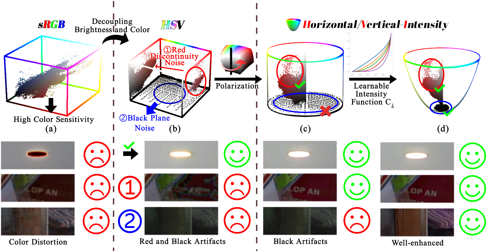
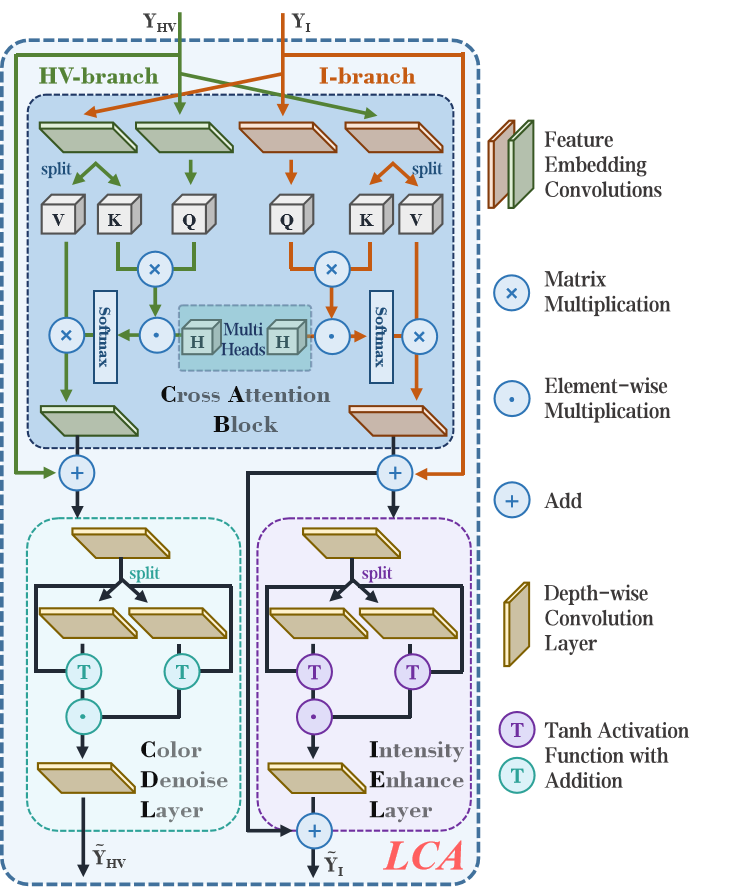
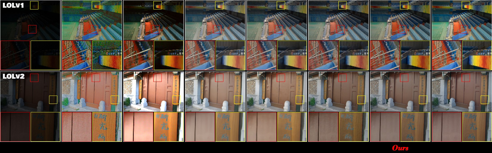

CVPR 2025
HVI: A New Color Space for
Low-light Image Enhancement
* Equal contribution · Yixu Feng is the student first author
1 Northwestern Polytechnical University2 Singapore Management University3 Xi'an University of Architecture and Technology
A color space designed for low-light vision—separating chromaticity from intensity to suppress red discontinuity and black-plane noise.
01 · Motivation
Rethinking the color space
Standard sRGB couples brightness and color, while HSV introduces red discontinuity and black-plane noise. HVI reshapes the hue-saturation plane and learns an intensity collapse function for stable enhancement.

02 · Overview
Color and Intensity Decoupling Network
CIDNet processes the HV chromatic plane and the intensity axis with two dedicated branches, then exchanges complementary information through Lighten Cross-Attention blocks.

LIGHTEN CROSS-ATTENTION
Separate, exchange, reconstruct.
The intensity branch focuses on illumination recovery; the HV branch removes chromatic noise. Cross-attention lets each branch borrow only the information it needs.

03 · Results
Consistent enhancement across benchmarks
HVI-CIDNet surpasses prior low-light enhancement methods across ten datasets while remaining lightweight and robust to severe noise, color shifts, and non-uniform illumination.

04 · Abstract
Designed for low-light vision
Low-Light Image Enhancement (LLIE) aims to recover detailed visual information from corrupted low-light images. Existing sRGB-based methods often produce color bias and brightness artifacts because brightness and chromaticity remain coupled, while HSV-based alternatives introduce red and black noise artifacts.
We propose Horizontal/Vertical-Intensity (HVI), a new color space defined by polarized HS maps and learnable intensity. Polarization closes the red discontinuity, and the learnable intensity function compresses unstable low-light regions. A Color and Intensity Decoupling Network (CIDNet) then learns accurate photometric mappings in HVI space. Comprehensive benchmark and ablation studies show that HVI with CIDNet outperforms state-of-the-art methods across ten datasets.
05 · Citation
BibTeX
@InProceedings{Yan_2025_CVPR,
author = {Yan, Qingsen and Feng, Yixu and Zhang, Cheng and
Pang, Guansong and Shi, Kangbiao and Wu, Peng and
Dong, Wei and Sun, Jinqiu and Zhang, Yanning},
title = {HVI: A New Color Space for Low-light Image Enhancement},
booktitle = {Proceedings of the IEEE/CVF Conference on Computer Vision and Pattern Recognition},
pages = {5678--5687},
year = {2025}
}